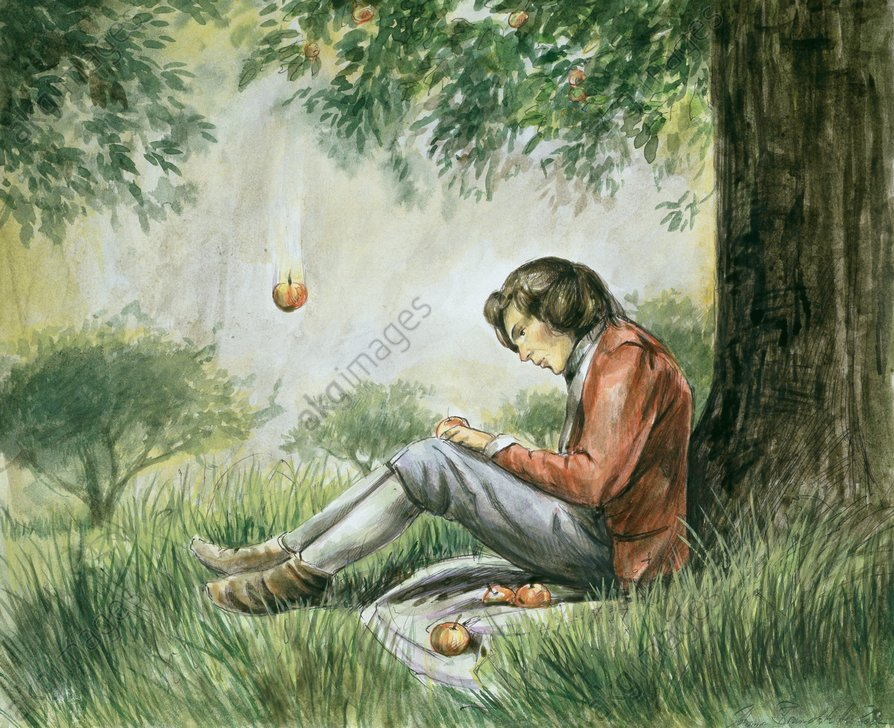

Nous connaissons tous l'histoire de Newton qui découvrit la gravité grâce

à une pomme qui lui serait tombée sur la tête. Cependant cette anec-
dote, aussi vrai soit elle, ne lui a pas révelé les secrés de la gravité,
mais l'a plutôt insité à se demander "mais pourquoi cette pomme tombe-t-elle?".
Il entreprit donc de trouver, de comprendre, pourquoi les objets tombent ainsi.
En 1687, Newton publia alors sa Théorie de la gravitation Universelle. Elle permet
de donner une explication cohérente sur le fait que la pomme tombe, ou encore
sur pourquoi les planètentes tournent autour du soleil. Il l'explique de la manière
suivantes: les astres possedent une masse, chacun a une masse différentes, un astre
très lourd "attirera" les astres plus léger.